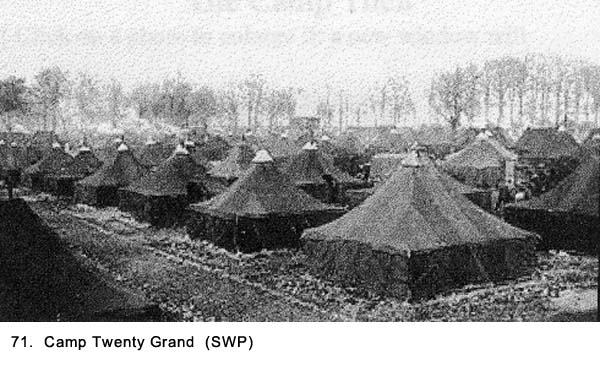
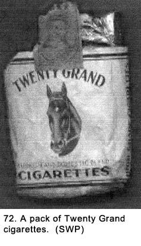
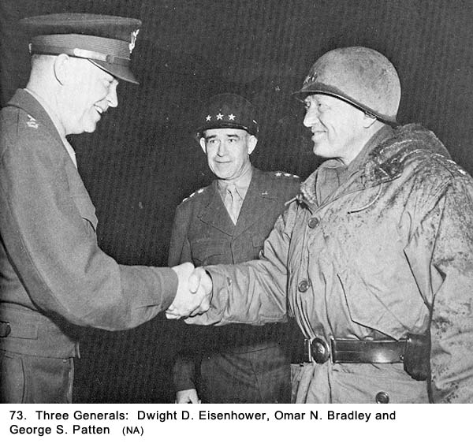
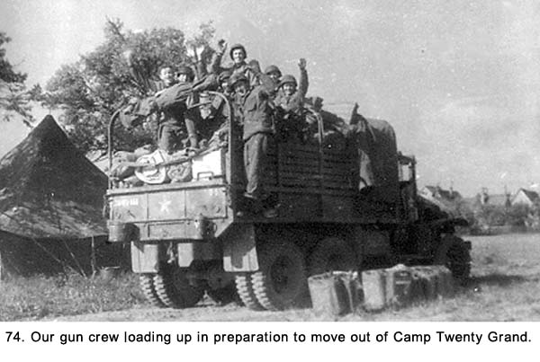
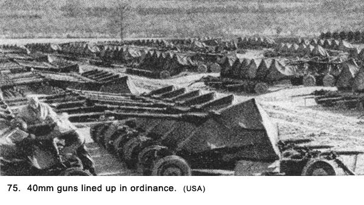
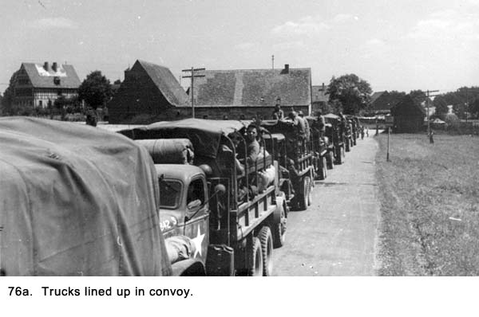
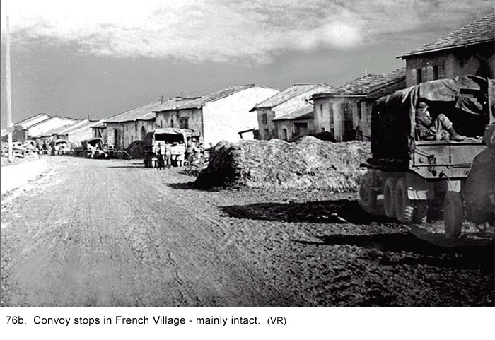

|
Table of Contents < - - - return Chapter 15 < - - - next
World War II Story by Robert F. Gallagher Chapter 14 - Camp Twenty Grand, France Success is the sole earthly judge of right and wrong. Adolph Hitler _______________________ Our Battalion convoyed approximately forty miles east of Le Havre to a camp located in the Forest de la Fontaine at St. Pierre de Varengeville. It is just six miles west of the city of Rouen. Along the way, we saw many small farms, which were surrounded by hedgerows instead of fences like it is in the States. These hedgerows were great obstacles to the American invasion forces during the battle here in Normandy, some months before and were responsible for heavy casualties to the American forces. They were easy to defend by the German army and difficult to surmount by the American troops. Destroyed tanks and other military vehicles dotted the landscape as reminders of the fierce battles.  The name of the camp where we stayed was Twenty Grand, and it consisted of thousands of six-man pyramidal tents set up as a staging area where newly arrived GIs would be assigned their duties in the ETO (See Fig. 71). There were nine separate camps that were used for this purpose, located in an area between the cities of LeHavre and Rouen. They were all named after the popular American cigarettes of the day (See Fig. 72). In addition to Camp Twenty Grand, there were Camps Lucky Strikes, Philip Morris, Herbert Tareyton, Pall Mall, Wings, Old Gold, Home Run, and Chesterfield. These camps were also known as replacement depots or, by the abbreviated version used by most GIs, "repo depos." The naming of the cigarette camps resulted from an attempt by the Allies to keep them secret from the Germans. The Allies felt that any interception of messages relating to them would be interpreted as referring to cigarettes, not camps. They were never referred to by their geographical location. We parked our trucks in an area of our camp called a "motor pool" and carried our personal gear over to prescribed tents. It's hard to describe how large these camps were. The many rows of tents in long parallel lines seemed to fade into the nearby forest. If there were any permanent structures in the camp, we did not see them. It was nothing but canvas as far as we could see. The tents were black and were furnished with the standard canvas army cots and a pot-bellied stove in the center. Even though it did not rain while we were there, evidently it had done so just before. The dirt floors of the tents and most of the outside area were a sea of mud. To keep our equipment dry, we had to pile it on our bunks. This left little room for us to lie down and sleep, but we had learned to improvise during our trip across the Atlantic Ocean and again in Camp Stapley in England. When we were crossing the English Channel and while on the convoy to Camp Twenty Grand, we had been eating C-rations, but in camp, we got fresh food - well, it was almost fresh. The milk, eggs, and mashed potatoes were all made from dehydrated materials, and most of the meat, vegetables, and fruit came out of cans. Nevertheless, it still beat rations. The chow lines were over a block long, and we were served food in our mess kits. We would extend the kit toward the cooks who were ladling the food out of large aluminum pots. It was all done with quick jabbing movements as we moved down the line trying to keep up with their sequence of serving. Little effort was made by them to aim at a specific spot of the mess kit so it was up to us to maneuver it as we saw the food coming. These cooks had been serving many thousands of men, three meals a day, for many months, and they had lost all semblance of social grace or even common courtesy. They were obviously overworked and were taking out their frustration on everyone in sight. They had heard every derogatory comment and smart remark about the quality of the food that could be generated by GIs who were looking for any opportunity to criticize. They were ready and on the defense for anything that was said. I remember hearing one soldier complaining to a cook as he was being served, "It looks like garbage," and the reply came back in an instant, "Well, it should, we just took it out of the garbage can over there and just added a little pepper, or was that mouse droppings?" Another GI asked in a sarcastic voice, "Is that all you can afford?" about his meager portion of dessert. The answer was, "I give out portions here based on the size of your brain, but I gave you a little more than you deserved because I'm such a nice guy." Between their retorts, the cooks kept up a steady cadence of "Move it on, move it on." We walked back to the tents where we were billeted with our food, a trip that guaranteed that its lukewarm condition would become even colder. There, we sat on the edge of our bunks to eat while balancing the mess kit on our laps. After a meal, we returned to the mess tent where we waited in another long line to clean our kits in four 55-gallon garbage cans lined up in a row. The first can was for garbage, the second had boiling soapy water with several GI brushes hanging off of it for scrubbing, and the next two were also boiling but clear water for rinsing, almost clear. All cans had a good amount of solids floating on top. One of the oldest and most consistent army rumors started to crop up again in this cigarette camp. It was the contention that the cooks put saltpeter in our food to reduce our sexual drive. No one ever saw it done or had any proof, but some men would swear that "someone who really knows" had told them it was so. There usually followed the inevitable conclusion, based on the jealousy that we felt for the preferential treatment given officers, that it was not added to the officers' mess. After being discussed in my tent for several minutes, we all decided that if they did add saltpeter to our food, it wasn't going to make any difference where we were going. At Camp Twenty Grand, we were assigned to the Third Army under the command of General George Patton. We learned at this camp that the First, Third, and Seventh Armies were all part of what was known as the Twelfth Army Group with General Omar Bradley in charge. General Eisenhower, the Allied Supreme Commander in Europe (See Fig. 73) in addition to commanding the Twelfth group, also commanded the Twenty-First Group under British General Montgomery and the American Sixth Group under Lieutenant General Jacob Deaver.  Patton had already established quite a reputation for himself as a great battlefield commander. Also, he was considered to be profane, unpredictable, and hotheaded by none other than General Bradley, his immediate superior. To the average GI, Patton was known as "Old Blood and Guts" because of a speech he made to some of his troops in which he said, "with your blood and my guts." He was known for his insistence on "spit and polish" for his troops, even down to what could be enforced in a combat area. Wearing a complete uniform and a steel helmet at all times were two of his favorite rules. Rifles and equipment were to be kept clean and in good working condition at all times. There was a rumor that he insisted on us wearing ties, but it proved to be false. We knew that some of the regulations that were passed on to us at this camp by our officers were not requirements of Patton. It was just a convenient way to threaten us into obeying a bunch of strict rules. We felt that they had probably thought them up on the spot. Because of Patton's reputation as a tyrant, it was convenient to instill fear of reprisal on members of his army by using his name. We had heard some, but not a lot, about his battlefield successes in North Africa, Sicily, the Battle of the Bulge, and, at this point, his drive across Northern France and now we were told that we were going to join his army's drive into Germany. While we were impressed with his battle victories, we were thinking more about his reputation for strict discipline and his violent temper. He had slapped a couple of soldiers who were suffering from battle fatigue when he visited hospitals in Italy, and the incidents had caused him to temporarily lose his command. Despite our being leery about our new commander, when we were all given shoulder patches for the Third Army, we were proud to sew them on the left sleeve of our uniforms and did it immediately. We packed up the trucks on March 10th (See
Fig. 74) and traveled east again for 135 miles to another camp near Reims,
France. Along the way, we saw many more bombed and shelled towns, and only
occasionally there would be one that had been spared major damage. Abandoned
or destroyed military equipment, both American and German, was scattered
along the sides of the roadways, in open fields and throughout the towns we
passed through.  This new camp was almost identical to Camp Twenty Grand, but, in addition, it had a major supply depot. There were stockpiles of everything you could think of from tanks to toilet paper (See Fig.75). Across from our tent were two-and-a-half ton trucks lined up in rows, more than I had ever seen before. Allied planes were always flying cover overhead. Many years later, I learned that Reims was the headquarters for General Dwight D. Eisenhower when he was in Europe.  There had been an advance party from Battery A of our Battalion who were there to meet us at Reims. They had landed at Rouen instead of Le Havre in their LSTs and proceeded directly to Reims to prepare for our arrival. They had our tents assigned, a mess kitchen set up, and lists of munitions we were to pick up there. The morning of our arrival at that camp, our Battalion had its second casualty. The men from Battery A were staying in the tents, but they were using a nearby building for storing supplies. The night before we arrived, someone stored a dozen or so five-gallon gasoline cans, known as "jerry cans," in an enclosed room with the tops left open. The next morning, a soldier from Battery A went into the room that was now filled with gasoline vapor. He lit a match and blew the end off of the building. The soldier was badly wounded and they described him as being "packed in grease" when he was shipped out just before we arrived. The first day there, we drew ammunition for our rifles, the 40 mm guns, hand grenades, TNT, and some miscellaneous items. Then the brass did something really dumb. They issued us new M-1 rifles. Because the sights on each rifle is a little bit different and often shoots a little off center, we had no way of knowing what characteristics the new ones had without shooting on a firing range. The guns we had turned in were the ones that we had qualified with on the Mojave Desert. We did not get a chance to fire the new rifles until we did some target practicing at our first gun emplacement. Most of the towns we passed through were
badly torn up from the battles that had been fought there but occasionally
there was one with less damage. Less usual meant most windows were blown out
but the badly pocked buildings were still structurally sound (See Figs. 76a
and 76b).  
Chapter 15 < - - - next Table of Contents < - - - return
Footnotes and Source of Photographs. Copyright, Robert F. Gallagher, 1999 - 2015, all rights reserved on all images and content.
|